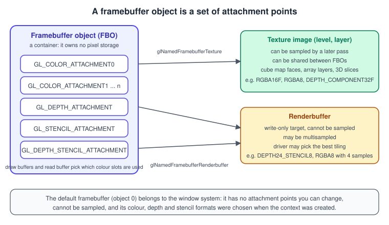
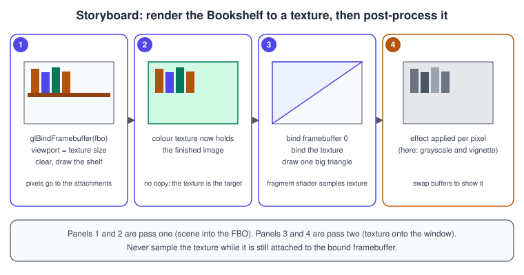
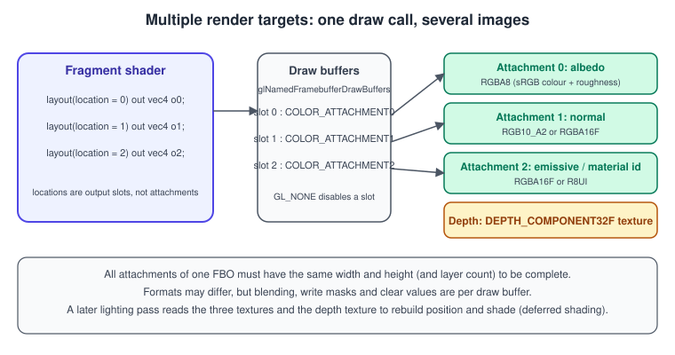
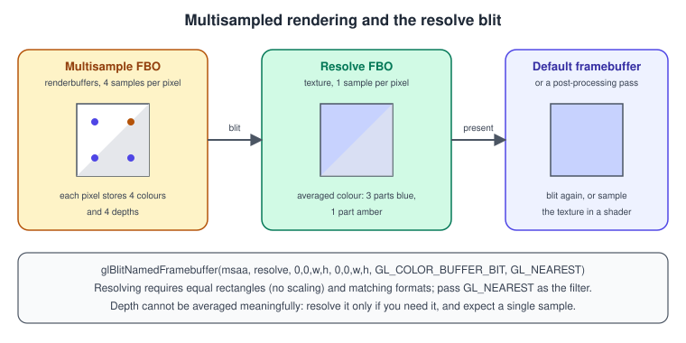

Framebuffers and Render to Texture
|
This content was generated with the assistance of AI and should be verified against the official documentation before being relied on in production. |
Until now every example drew straight into the window. A framebuffer object (FBO) lets a draw call write into textures that you own instead, which is the foundation of post-processing, shadow maps, reflections, deferred shading, bloom, picking by colour and every other technique that needs the result of one pass as the input of the next. This page explains what an FBO is, which images can be attached to it, the rules that make it complete, how to render to several targets at once, how multisampling and the resolve blit work, and what changes on OpenGL ES. It ends with a complete program that renders the Bookshelf to an off-screen texture and then draws that texture to the window through a post-processing shader.
The facts were checked in November 2026. The versions documented are OpenGL 4.6 core (GLSL 4.60) for the main text and code,
and OpenGL ES 3.2 (GLSL ES 3.20) where it differs. Framebuffer objects have been core since OpenGL 3.0 and ES 2.0; the
direct-state-access functions used in the examples (glCreateFramebuffers, glNamedFramebufferTexture and friends) are core
since OpenGL 4.5 and are not available in OpenGL ES. The code needs a desktop GPU and driver with OpenGL 4.5 or later, the GLFW
and GLM libraries and a glad2 loader generated for 4.6 core; the setup is described in
Getting started on the desktop. The general theory behind render
targets and passes is in The Rendering Pipeline and
Transparency, Blending and Post-processing.
What a framebuffer is
A framebuffer is the destination of the last stage of the pipeline: the place where the depth test, stencil test, blending and colour writes land. OpenGL has two kinds:
-
The default framebuffer (object name 0) is created by the window system together with the context. It is what GLFW presents when you call
glfwSwapBuffers. Its pixel formats, sample count and bit depths were fixed when the window was created, and you cannot attach anything to it or sample from it. -
Framebuffer objects are created by the application. An FBO has no pixel storage of its own. It is a small table of attachment points that refer to images stored elsewhere: texture levels and renderbuffers.

The attachment points are:
| Attachment point | Holds | Notes |
|---|---|---|
|
Colour written by the fragment shader outputs |
|
|
Depth values for the depth test |
Formats |
|
Stencil values |
Format |
|
Combined depth and stencil image |
Formats |
A framebuffer is bound with glBindFramebuffer. The target GL_DRAW_FRAMEBUFFER is where draw calls and clears write and
GL_READ_FRAMEBUFFER is where glReadPixels and glBlitFramebuffer read from. Binding GL_FRAMEBUFFER sets both. With direct
state access you can configure and clear an FBO without binding it, and you only bind it when you draw into it.
Textures versus renderbuffers
Each attachment is either a texture image or a renderbuffer.
| Texture | Renderbuffer | |
|---|---|---|
Can be sampled by a shader |
Yes, in a later pass |
No |
Can be multisampled |
Yes, as a |
Yes, with |
Can be a layer, cube face or 3D slice |
Yes |
No |
Typical use |
Colour that will be read next, shadow depth maps, G-buffer layers |
Depth and stencil that are only needed to make the depth test work, and multisampled colour that is resolved with a blit |
Storage call |
|
|
The practical rule is simple: if a later pass needs to read the image, make it a texture. If the image only exists to support
the current pass, make it a renderbuffer, because the driver is then free to choose the best internal layout. In OpenGL 4.6
nothing forces renderbuffers to be faster than textures, and many drivers treat them identically, but the rule keeps the code
honest about intent. Both kinds are chosen by internal format, and the format must be renderable. All of the required
colour formats are listed in the OpenGL specification. In practice use GL_RGBA8 for plain colour, GL_SRGB8_ALPHA8 for
colour stored as sRGB, GL_RGBA16F for high dynamic range and GL_R11F_G11F_B10F as a smaller HDR format without alpha. See
Color Spaces, HDR and Tone Mapping for the reasons.
The storage of a texture attached to an FBO should be allocated with the immutable glTextureStorage2D family. Immutable
storage can never change size or format, so a resize always means creating a new texture and attaching it, which keeps the
completeness check meaningful. A mutable texture that is respecified with glTexImage2D after it was attached can silently
make the FBO incomplete.
Completeness
An FBO may only be drawn to when it is framebuffer complete. Ask with glCheckNamedFramebufferStatus (or
glCheckFramebufferStatus for the bound FBO) after you finish configuring it. The result is GL_FRAMEBUFFER_COMPLETE or one of
the following:
| Status | Typical cause |
|---|---|
|
An attachment is not a valid image (texture deleted, level out of range), has zero size, or its format is not renderable for that attachment point, such as a colour format on the depth point. |
|
The FBO has no image at all and no default width and height (see the texture-less FBO below). |
|
A draw buffer lists a colour attachment that has nothing attached. |
|
The read buffer names a colour attachment that has nothing attached. |
|
The combination of formats is legal but this implementation cannot render to it. Try another combination, for example separate depth and stencil instead of a combined format. |
|
The attachments do not all have the same sample count, or do not agree on fixed sample locations. |
|
Some attachments are layered and others are not, or the layer counts differ. |
Always check the status when you build an FBO and treat anything but complete as a hard error during development. Drawing to an
incomplete framebuffer does not crash; it generates GL_INVALID_FRAMEBUFFER_OPERATION and draws nothing, which looks like a black
screen. The checks that matter in practice are that every attachment has the same width and height, that the formats are
renderable, and that the draw buffers match what is attached.
An FBO may have no attachments at all, only a default width, height, layer count and sample count set with
glNamedFramebufferParameteri (OpenGL 4.3 and ES 3.1). Such a texture-less FBO is used for rasterising into image or buffer
stores from fragment shaders, for example for voxelisation or for counting fragments.
Render to texture, step by step
Rendering to a texture is the same recipe every time:
-
Create the colour texture with immutable storage and set its sampling parameters.
-
Create the depth renderbuffer (or texture) of the same size.
-
Create the FBO and attach both.
-
Select which colour attachment receives the fragment shader output.
-
Check completeness.
-
Each frame: bind the FBO, set the viewport to the attachment size, clear, and draw the scene.
-
Bind framebuffer 0, restore the viewport, bind the texture, and draw a full-screen triangle that samples it.

The pass structure of a larger frame looks the same, only with more boxes. Each arrow is a texture that one pass writes and the next one samples:
depth texture"] --> SC["Scene pass
HDR colour + depth"] SC --> BR["Bright pass
threshold"] BR --> BL["Blur passes
ping-pong textures"] SC --> TM["Tone mapping
and composite"] BL --> TM TM --> DF[("Default framebuffer
window")]
Pitfalls of the recipe
-
Set the viewport to the attachment size. The viewport is not part of the FBO. A viewport left at the window size renders into a corner or clips the image when the texture has a different size.
-
Depth writes must be enabled to clear depth.
glClearandglClearBufferobeyglDepthMaskand the scissor test. Clear with the depth mask enabled and the scissor test off, then change state. -
Feedback loops are undefined. If a texture is attached to the draw framebuffer and bound to a sampler that the current shader reads, the result is undefined (some drivers give stale pixels, others tearing). Bind a different FBO or texture, or use
glTextureBarrier(OpenGL 4.5) when you really want to read what you wrote earlier in the same pass. -
Resizing. A window resize must recreate the textures and renderbuffers (they are immutable) and re-attach them. Do that from the framebuffer-size callback or by comparing sizes every frame as the example does, not from the window-size callback, because on high-DPI screens the framebuffer size in pixels differs from the window size in screen coordinates.
-
Default framebuffer colour space. When you draw into an sRGB texture or a window with an sRGB-capable format, linear to sRGB conversion on write is controlled by
GL_FRAMEBUFFER_SRGBin desktop OpenGL. It is always on for sRGB attachments in OpenGL ES 3.x unlessEXT_sRGB_write_controlexists. Reads from anGL_SRGB8_ALPHA8texture are converted to linear automatically by the sampler.
A complete example: Bookshelf post-processing
The program below is the third step of the Bookshelf: a lit, rotating book box. It draws the box into an off-screen
GL_RGBA16F texture with a depth renderbuffer, then draws a full-screen triangle that applies a vignette and a grayscale mix.
Press the space bar to toggle the effect. It uses direct state access throughout, a debug callback, and rebuilds the target
whenever the framebuffer size changes.
// post.cpp - render the Bookshelf book to an FBO, then post-process it.
// Build with the CMakeLists.txt shown after this listing.
#include <glad/gl.h>
#include <GLFW/glfw3.h>
#include <glm/glm.hpp>
#include <glm/gtc/matrix_transform.hpp>
#include <glm/gtc/type_ptr.hpp>
#include <array>
#include <cstdio>
#include <cstdlib>
#include <utility>
#include <vector>
namespace {
constexpr const char* kSceneVs = R"(#version 460 core
layout(location = 0) in vec3 aPos;
layout(location = 1) in vec3 aNormal;
layout(location = 0) uniform mat4 uMvp;
layout(location = 4) uniform mat3 uNormalMat; // a mat4 uses 4 locations, a mat3 uses 3
out vec3 vNormal;
out vec3 vObjPos;
void main() {
vNormal = uNormalMat * aNormal;
vObjPos = aPos;
gl_Position = uMvp * vec4(aPos, 1.0);
}
)";
constexpr const char* kSceneFs = R"(#version 460 core
in vec3 vNormal;
in vec3 vObjPos;
layout(location = 0) out vec4 outColor;
void main() {
vec3 n = normalize(vNormal);
vec3 l = normalize(vec3(0.4, 0.8, 0.5));
float diff = max(dot(n, l), 0.0);
// Book-like colouring: pages (light) on the front, cover (dark red) elsewhere.
vec3 base = vObjPos.z > 0.49 ? vec3(0.93, 0.89, 0.78) : vec3(0.45, 0.10, 0.12);
outColor = vec4(base * (0.15 + 0.85 * diff), 1.0); // linear colour
}
)";
constexpr const char* kPostVs = R"(#version 460 core
out vec2 vUv;
void main() {
// One triangle that covers the whole screen, generated from gl_VertexID.
vec2 p = vec2((gl_VertexID << 1) & 2, gl_VertexID & 2);
vUv = p;
gl_Position = vec4(p * 2.0 - 1.0, 0.0, 1.0);
}
)";
constexpr const char* kPostFs = R"(#version 460 core
in vec2 vUv;
layout(binding = 0) uniform sampler2D uScene;
layout(location = 0) uniform float uEffect; // 0 = off, 1 = full
layout(location = 0) out vec4 outColor;
void main() {
vec3 c = texture(uScene, vUv).rgb;
float luma = dot(c, vec3(0.2126, 0.7152, 0.0722));
float vignette = smoothstep(0.85, 0.25, length(vUv - 0.5));
vec3 graded = mix(c, vec3(luma), 0.8) * mix(1.0, vignette, 0.7);
c = mix(c, graded, uEffect);
outColor = vec4(pow(c, vec3(1.0 / 2.2)), 1.0); // simple gamma encode
}
)";
void APIENTRY debugCallback(GLenum, GLenum type, GLuint, GLenum severity, GLsizei,
const GLchar* msg, const void*) {
if (severity == GL_DEBUG_SEVERITY_NOTIFICATION) return;
std::fprintf(stderr, "GL %s: %s\n", type == GL_DEBUG_TYPE_ERROR ? "error" : "message", msg);
}
GLuint compile(GLenum type, const char* src) {
GLuint s = glCreateShader(type);
glShaderSource(s, 1, &src, nullptr);
glCompileShader(s);
GLint ok = 0;
glGetShaderiv(s, GL_COMPILE_STATUS, &ok);
if (!ok) {
char log[2048];
glGetShaderInfoLog(s, sizeof log, nullptr, log);
std::fprintf(stderr, "shader error:\n%s\n", log);
std::exit(1);
}
return s;
}
GLuint makeProgram(const char* vs, const char* fs) {
GLuint v = compile(GL_VERTEX_SHADER, vs), f = compile(GL_FRAGMENT_SHADER, fs);
GLuint p = glCreateProgram();
glAttachShader(p, v);
glAttachShader(p, f);
glLinkProgram(p);
GLint ok = 0;
glGetProgramiv(p, GL_LINK_STATUS, &ok);
if (!ok) {
char log[2048];
glGetProgramInfoLog(p, sizeof log, nullptr, log);
std::fprintf(stderr, "link error:\n%s\n", log);
std::exit(1);
}
glDeleteShader(v);
glDeleteShader(f);
return p;
}
// Unit cube with one normal per face: 24 vertices (position + normal), 36 indices.
void makeCube(std::vector<float>& verts, std::vector<unsigned>& idx) {
for (int f = 0; f < 6; ++f) {
int axis = f / 2;
float sign = (f % 2 == 0) ? 1.0f : -1.0f;
glm::vec3 n(0.0f), u(0.0f), v(0.0f);
n[axis] = sign;
u[(axis + 1) % 3] = 1.0f;
v[(axis + 2) % 3] = 1.0f;
if (sign < 0.0f) std::swap(u, v); // keep counter-clockwise winding
const glm::vec3 corners[4] = {n * 0.5f + (-u - v) * 0.5f, n * 0.5f + (u - v) * 0.5f,
n * 0.5f + (u + v) * 0.5f, n * 0.5f + (-u + v) * 0.5f};
unsigned base = static_cast<unsigned>(verts.size() / 6);
for (const glm::vec3& c : corners) {
verts.insert(verts.end(), {c.x, c.y, c.z, n.x, n.y, n.z});
}
idx.insert(idx.end(), {base, base + 1, base + 2, base, base + 2, base + 3});
}
}
struct Target {
GLuint fbo = 0, color = 0, depth = 0;
int w = 0, h = 0;
};
Target createTarget(int w, int h) {
Target t;
t.w = w;
t.h = h;
glCreateTextures(GL_TEXTURE_2D, 1, &t.color);
glTextureStorage2D(t.color, 1, GL_RGBA16F, w, h); // immutable storage, one level
glTextureParameteri(t.color, GL_TEXTURE_MIN_FILTER, GL_LINEAR);
glTextureParameteri(t.color, GL_TEXTURE_MAG_FILTER, GL_LINEAR);
glTextureParameteri(t.color, GL_TEXTURE_WRAP_S, GL_CLAMP_TO_EDGE);
glTextureParameteri(t.color, GL_TEXTURE_WRAP_T, GL_CLAMP_TO_EDGE);
glCreateRenderbuffers(1, &t.depth);
glNamedRenderbufferStorage(t.depth, GL_DEPTH_COMPONENT32F, w, h);
glCreateFramebuffers(1, &t.fbo);
glNamedFramebufferTexture(t.fbo, GL_COLOR_ATTACHMENT0, t.color, 0);
glNamedFramebufferRenderbuffer(t.fbo, GL_DEPTH_ATTACHMENT, GL_RENDERBUFFER, t.depth);
glNamedFramebufferDrawBuffer(t.fbo, GL_COLOR_ATTACHMENT0);
glNamedFramebufferReadBuffer(t.fbo, GL_COLOR_ATTACHMENT0);
GLenum status = glCheckNamedFramebufferStatus(t.fbo, GL_FRAMEBUFFER);
if (status != GL_FRAMEBUFFER_COMPLETE) {
std::fprintf(stderr, "framebuffer incomplete: 0x%x\n", status);
std::exit(1);
}
return t;
}
void destroyTarget(Target& t) {
glDeleteFramebuffers(1, &t.fbo);
glDeleteTextures(1, &t.color);
glDeleteRenderbuffers(1, &t.depth);
t = Target{};
}
bool gEffectOn = true;
void onKey(GLFWwindow* win, int key, int, int action, int) {
if (action != GLFW_PRESS) return;
if (key == GLFW_KEY_ESCAPE) glfwSetWindowShouldClose(win, GLFW_TRUE);
if (key == GLFW_KEY_SPACE) gEffectOn = !gEffectOn;
}
} // namespace
int main() {
if (!glfwInit()) return 1;
glfwWindowHint(GLFW_CONTEXT_VERSION_MAJOR, 4);
glfwWindowHint(GLFW_CONTEXT_VERSION_MINOR, 6);
glfwWindowHint(GLFW_OPENGL_PROFILE, GLFW_OPENGL_CORE_PROFILE);
glfwWindowHint(GLFW_OPENGL_DEBUG_CONTEXT, GLFW_TRUE);
GLFWwindow* win = glfwCreateWindow(960, 600, "Bookshelf GL: render to texture", nullptr, nullptr);
if (!win) { glfwTerminate(); return 1; }
glfwMakeContextCurrent(win);
glfwSwapInterval(1);
glfwSetKeyCallback(win, onKey);
if (!gladLoadGL(glfwGetProcAddress)) { std::fprintf(stderr, "glad failed\n"); return 1; }
glEnable(GL_DEBUG_OUTPUT);
glDebugMessageCallback(debugCallback, nullptr);
GLuint sceneProg = makeProgram(kSceneVs, kSceneFs);
GLuint postProg = makeProgram(kPostVs, kPostFs);
std::vector<float> verts;
std::vector<unsigned> idx;
makeCube(verts, idx);
GLuint vbo, ebo, vao, emptyVao;
glCreateBuffers(1, &vbo);
glNamedBufferStorage(vbo, static_cast<GLsizeiptr>(verts.size() * sizeof(float)), verts.data(), 0);
glCreateBuffers(1, &ebo);
glNamedBufferStorage(ebo, static_cast<GLsizeiptr>(idx.size() * sizeof(unsigned)), idx.data(), 0);
glCreateVertexArrays(1, &vao);
glVertexArrayVertexBuffer(vao, 0, vbo, 0, 6 * sizeof(float));
glVertexArrayElementBuffer(vao, ebo);
glEnableVertexArrayAttrib(vao, 0);
glVertexArrayAttribFormat(vao, 0, 3, GL_FLOAT, GL_FALSE, 0);
glVertexArrayAttribBinding(vao, 0, 0);
glEnableVertexArrayAttrib(vao, 1);
glVertexArrayAttribFormat(vao, 1, 3, GL_FLOAT, GL_FALSE, 3 * sizeof(float));
glVertexArrayAttribBinding(vao, 1, 0);
glCreateVertexArrays(1, &emptyVao); // core profile needs a VAO even with no attributes
Target target;
while (!glfwWindowShouldClose(win)) {
glfwPollEvents();
int fbw = 0, fbh = 0;
glfwGetFramebufferSize(win, &fbw, &fbh);
if (fbw == 0 || fbh == 0) { glfwWaitEvents(); continue; } // minimised
if (fbw != target.w || fbh != target.h) {
if (target.fbo) destroyTarget(target);
target = createTarget(fbw, fbh);
}
const float t = static_cast<float>(glfwGetTime());
glm::mat4 model = glm::rotate(glm::mat4(1.0f), t * 0.8f, glm::vec3(0, 1, 0));
model = glm::scale(model, glm::vec3(1.0f, 1.4f, 0.35f)); // a book-shaped box
glm::mat4 view = glm::lookAt(glm::vec3(0, 0.8f, 3.2f), glm::vec3(0), glm::vec3(0, 1, 0));
glm::mat4 proj = glm::perspective(glm::radians(45.0f), float(fbw) / float(fbh), 0.1f, 50.0f);
glm::mat4 mvp = proj * view * model;
glm::mat3 normalMat = glm::transpose(glm::inverse(glm::mat3(model)));
// Pass 1: scene into the off-screen target.
glBindFramebuffer(GL_DRAW_FRAMEBUFFER, target.fbo);
glViewport(0, 0, target.w, target.h);
const float clearColor[4] = {0.05f, 0.06f, 0.09f, 1.0f};
const float clearDepth = 1.0f;
glEnable(GL_DEPTH_TEST);
glDepthMask(GL_TRUE); // clearing depth honours the mask
glClearNamedFramebufferfv(target.fbo, GL_COLOR, 0, clearColor);
glClearNamedFramebufferfv(target.fbo, GL_DEPTH, 0, &clearDepth);
glUseProgram(sceneProg);
glUniformMatrix4fv(0, 1, GL_FALSE, glm::value_ptr(mvp));
glUniformMatrix3fv(4, 1, GL_FALSE, glm::value_ptr(normalMat));
glBindVertexArray(vao);
glDrawElements(GL_TRIANGLES, static_cast<GLsizei>(idx.size()), GL_UNSIGNED_INT, nullptr);
// Pass 2: the texture onto the window with a full-screen triangle.
glBindFramebuffer(GL_DRAW_FRAMEBUFFER, 0);
glViewport(0, 0, fbw, fbh);
glDisable(GL_DEPTH_TEST);
glUseProgram(postProg);
glUniform1f(0, gEffectOn ? 1.0f : 0.0f);
glBindTextureUnit(0, target.color);
glBindVertexArray(emptyVao);
glDrawArrays(GL_TRIANGLES, 0, 3);
glfwSwapBuffers(win);
}
destroyTarget(target);
glfwTerminate();
return 0;
}A minimal CMakeLists.txt for the example, assuming glad2 was generated into external/glad with
glad --api gl:core=4.6 --out-path external/glad c and GLFW and GLM are installed (for example with vcpkg or a system package
manager; see C++ build and tooling):
cmake_minimum_required(VERSION 3.20)
project(bookshelf_gl CXX)
set(CMAKE_CXX_STANDARD 20)
set(CMAKE_CXX_STANDARD_REQUIRED ON)
find_package(glfw3 CONFIG REQUIRED)
find_package(glm CONFIG REQUIRED)
add_executable(post post.cpp external/glad/src/gl.c)
target_include_directories(post PRIVATE external/glad/include)
target_link_libraries(post PRIVATE glfw glm::glm)Points worth noticing in the listing:
-
The scene shader writes linear colour into a floating-point texture; the post shader applies the gamma encode as the last step. If the target were
GL_SRGB8_ALPHA8withGL_FRAMEBUFFER_SRGBenabled, the hardware would do that conversion. -
glClearNamedFramebufferfvclears one buffer of the FBO without binding it. The parameter after the buffer type is the index of the draw buffer, not the attachment number. -
The full-screen triangle uses a single oversized triangle instead of a quad. It has no diagonal seam, so helper-invocation derivatives across the diagonal are not an issue, and the clipped corners cost nothing.
-
A core-profile context requires a VAO to be bound for every draw call, even when no vertex attributes are read, so the post pass binds an empty one.
Selecting draw and read buffers
Fragment shader outputs are written to draw buffers. By default an FBO writes colour to GL_COLOR_ATTACHMENT0. The mapping
from fragment shader output location to attachment is set with glNamedFramebufferDrawBuffers (or glDrawBuffers on the bound
FBO):
const GLenum targets[3] = {GL_COLOR_ATTACHMENT0, GL_COLOR_ATTACHMENT1, GL_COLOR_ATTACHMENT2};
glNamedFramebufferDrawBuffers(fbo, 3, targets); // output location i -> targets[i]
const GLenum skipSecond[3] = {GL_COLOR_ATTACHMENT0, GL_NONE, GL_COLOR_ATTACHMENT2};
glNamedFramebufferDrawBuffers(fbo, 3, skipSecond); // output 1 is discardedThe read buffer, set with glNamedFramebufferReadBuffer, is the colour attachment used by glReadPixels,
glBlitFramebuffer and the copy functions. Only one can be selected at a time. For the default framebuffer the corresponding
names are GL_BACK and GL_FRONT.
Multiple render targets and the G-buffer
A fragment shader can declare several outputs, each with its own layout(location = n). With the draw buffers set as above, one
draw call writes all of them. This is called multiple render targets (MRT). The classic use is deferred shading: the geometry
pass writes surface properties to a G-buffer, and a later full-screen pass reads those textures plus the depth buffer to light
each pixel exactly once, however many lights there are. The general technique is described in
Lighting and Shading Models.

A G-buffer for the Bookshelf, with a depth texture so the lighting pass can reconstruct world positions from depth:
struct GBuffer {
GLuint fbo = 0;
GLuint albedo = 0; // RGBA8 : base colour (rgb) + roughness (a)
GLuint normal = 0; // RGB10_A2 : encoded world normal
GLuint emissive = 0; // RGBA16F : emissive colour (the desk lamp bulb)
GLuint depth = 0; // DEPTH_COMPONENT32F texture, sampled in the lighting pass
};
static GLuint makeTexture2D(GLenum internalFormat, int w, int h) {
GLuint tex;
glCreateTextures(GL_TEXTURE_2D, 1, &tex);
glTextureStorage2D(tex, 1, internalFormat, w, h);
glTextureParameteri(tex, GL_TEXTURE_MIN_FILTER, GL_NEAREST); // G-buffer data is not blended
glTextureParameteri(tex, GL_TEXTURE_MAG_FILTER, GL_NEAREST);
glTextureParameteri(tex, GL_TEXTURE_WRAP_S, GL_CLAMP_TO_EDGE);
glTextureParameteri(tex, GL_TEXTURE_WRAP_T, GL_CLAMP_TO_EDGE);
return tex;
}
GBuffer createGBuffer(int w, int h) {
GBuffer g;
g.albedo = makeTexture2D(GL_RGBA8, w, h);
g.normal = makeTexture2D(GL_RGB10_A2, w, h);
g.emissive = makeTexture2D(GL_RGBA16F, w, h);
g.depth = makeTexture2D(GL_DEPTH_COMPONENT32F, w, h);
glCreateFramebuffers(1, &g.fbo);
glNamedFramebufferTexture(g.fbo, GL_COLOR_ATTACHMENT0, g.albedo, 0);
glNamedFramebufferTexture(g.fbo, GL_COLOR_ATTACHMENT1, g.normal, 0);
glNamedFramebufferTexture(g.fbo, GL_COLOR_ATTACHMENT2, g.emissive, 0);
glNamedFramebufferTexture(g.fbo, GL_DEPTH_ATTACHMENT, g.depth, 0);
const GLenum draw[3] = {GL_COLOR_ATTACHMENT0, GL_COLOR_ATTACHMENT1, GL_COLOR_ATTACHMENT2};
glNamedFramebufferDrawBuffers(g.fbo, 3, draw);
if (glCheckNamedFramebufferStatus(g.fbo, GL_FRAMEBUFFER) != GL_FRAMEBUFFER_COMPLETE) {
// report the error and stop; see the status table above
}
return g;
}The matching geometry-pass fragment shader:
#version 460 core
in vec3 vWorldNormal;
in vec2 vUv;
layout(binding = 0) uniform sampler2D uCover; // sRGB texture: sampled as linear
layout(location = 16) uniform float uRoughness; // locations are shared by all stages of a program
layout(location = 17) uniform vec3 uEmissive;
layout(location = 0) out vec4 outAlbedo; // GL_COLOR_ATTACHMENT0
layout(location = 1) out vec4 outNormal; // GL_COLOR_ATTACHMENT1
layout(location = 2) out vec4 outEmissive; // GL_COLOR_ATTACHMENT2
void main() {
outAlbedo = vec4(texture(uCover, vUv).rgb, uRoughness);
outNormal = vec4(normalize(vWorldNormal) * 0.5 + 0.5, 1.0); // pack [-1,1] into [0,1]
outEmissive = vec4(uEmissive, 1.0);
}Source: OpenGL Wiki: Framebuffer Object
Rules for MRT worth remembering:
-
All colour attachments must have the same size, but their formats may differ. Blending, colour write masks and clear values are per draw buffer: use
glEnablei(GL_BLEND, i),glColorMaskiandglClearNamedFramebufferfv(fbo, GL_COLOR, i, v)for bufferi. Integer attachments (for exampleGL_R32UIfor object ids) are cleared withglClearNamedFramebufferuivand are not blended. -
In OpenGL ES 3.0 and 3.1 the number of simultaneous draw buffers is at least 4. Count your bytes per pixel: a fat G-buffer is memory-bandwidth heavy, and on tile-based mobile GPUs it can force the tile to be flushed to memory. Prefer thin G-buffers or forward rendering on mobile, and see GPU Architecture Basics.
-
A shader output whose draw-buffer slot is
GL_NONEis discarded. An attachment that no active draw buffer points at keeps its old contents.
Multisampling and the resolve blit
Multisample anti-aliasing (MSAA) stores several coverage and depth samples per pixel and averages the colours when the image is
finished. Because the stored image is no longer one colour per pixel, a multisampled image cannot be displayed directly or
sampled with texture(). The workflow is:
-
Create a multisample FBO with renderbuffers created by
glNamedRenderbufferStorageMultisample, or withGL_TEXTURE_2D_MULTISAMPLEtextures fromglTextureStorage2DMultisample. -
Render the scene into it.
-
Resolve it with
glBlitNamedFramebufferinto a single-sample FBO (usually a texture) or the default framebuffer. -
Use the resolved texture for the next pass.

const int kSamples = 4;
GLint maxSamples = 0;
glGetIntegerv(GL_MAX_SAMPLES, &maxSamples); // never ask for more than this
const int samples = std::min(kSamples, maxSamples);
// Multisampled FBO: renderbuffers only, they are resolved, never sampled.
GLuint msaaFbo, msaaColor, msaaDepth;
glCreateRenderbuffers(1, &msaaColor);
glNamedRenderbufferStorageMultisample(msaaColor, samples, GL_RGBA16F, w, h);
glCreateRenderbuffers(1, &msaaDepth);
glNamedRenderbufferStorageMultisample(msaaDepth, samples, GL_DEPTH_COMPONENT32F, w, h);
glCreateFramebuffers(1, &msaaFbo);
glNamedFramebufferRenderbuffer(msaaFbo, GL_COLOR_ATTACHMENT0, GL_RENDERBUFFER, msaaColor);
glNamedFramebufferRenderbuffer(msaaFbo, GL_DEPTH_ATTACHMENT, GL_RENDERBUFFER, msaaDepth);
// ... render the scene with msaaFbo bound ...
// Resolve: same rectangle in and out, no scaling, same colour format.
glBlitNamedFramebuffer(msaaFbo, resolveTarget.fbo,
0, 0, w, h, // source rectangle
0, 0, w, h, // destination rectangle
GL_COLOR_BUFFER_BIT, GL_NEAREST);The resolve rules are strict: when the source is multisampled the destination rectangle must have the same size as the source
rectangle, the two framebuffers must have the same internal formats for the buffers being copied, and an integer format cannot be
filtered. Violating them generates GL_INVALID_OPERATION. Blitting depth or stencil from a multisample buffer copies a
single sample rather than averaging, so only do it when you really need it. Blitting also lets you scale an image between
single-sample framebuffers: pass different rectangles and GL_LINEAR for colour.
Other facts about multisampling:
-
glEnable(GL_MULTISAMPLE)is on by default in core profiles. Sample shading (glEnable(GL_SAMPLE_SHADING)withglMinSampleShading, OpenGL 4.0) runs the fragment shader per sample for smoother shader aliasing at a high cost. -
A multisampled window can be requested with
glfwWindowHint(GLFW_SAMPLES, 4), but then you cannot control the resolve, which makes HDR post-processing before the resolve impossible. Use your own multisample FBO for that. -
Tone mapping must happen after the resolve, or very bright samples dominate their pixel and edges look jagged again.
-
Deferred shading and MSAA do not mix easily, since the G-buffer would need multisample textures and per-sample lighting. Engines use post-process anti-aliasing (FXAA, SMAA, temporal methods) instead; see Antialiasing and HDR.
Depth textures and sampling depth
A depth image that a later pass reads (shadow maps, soft particles, screen-space effects) is attached as a texture with a depth
internal format. When a depth texture is sampled as an ordinary sampler2D the shader receives the raw depth in the red
channel. When it is sampled through a sampler2DShadow with GL_TEXTURE_COMPARE_MODE set to GL_COMPARE_REF_TO_TEXTURE, the
hardware compares the stored depth with a reference value and returns 0 or 1 (or a filtered mix with linear filtering). The
shadow technique is explained in Shadow mapping.
GLuint depthTex;
glCreateTextures(GL_TEXTURE_2D, 1, &depthTex);
glTextureStorage2D(depthTex, 1, GL_DEPTH_COMPONENT32F, w, h);
glTextureParameteri(depthTex, GL_TEXTURE_MIN_FILTER, GL_NEAREST);
glTextureParameteri(depthTex, GL_TEXTURE_MAG_FILTER, GL_NEAREST);
glTextureParameteri(depthTex, GL_DEPTH_STENCIL_TEXTURE_MODE, GL_DEPTH_COMPONENT); // for D24S8 etc.
glNamedFramebufferTexture(fbo, GL_DEPTH_ATTACHMENT, depthTex, 0);
glNamedFramebufferDrawBuffer(fbo, GL_NONE); // depth-only FBO: no colour output
glNamedFramebufferReadBuffer(fbo, GL_NONE);Perspective depth is not linear: to get a view-space distance from a depth sample, undo the projection (see Cameras and projection). A depth texture cannot be attached to a framebuffer and sampled in the same draw for the same reason as colour: that is a feedback loop.
Layered rendering and cube maps
Attaching a whole layered texture (an array, a cube map or a 3D texture) with glNamedFramebufferTexture makes the attachment
layered. A geometry shader (or, in OpenGL 4.6, a vertex shader using the core gl_Layer output) then chooses the layer for
each primitive, so a single draw call can fill all six cube faces or all cascades of a shadow map. To render to one face or
layer only, use glNamedFramebufferTextureLayer(fbo, attachment, texture, level, layer). All attachments of a layered FBO must
have the same layer count.
GLuint cube; // reflection probe for the lamp
glCreateTextures(GL_TEXTURE_CUBE_MAP, 1, &cube);
glTextureStorage2D(cube, 1, GL_RGBA16F, 512, 512);
glNamedFramebufferTextureLayer(probeFbo, GL_COLOR_ATTACHMENT0, cube, 0, face); // face 0..5, one face per pass
// or, for one pass with a geometry shader that writes gl_Layer:
glNamedFramebufferTexture(probeFbo, GL_COLOR_ATTACHMENT0, cube, 0);Clearing, invalidating and reading back
-
glClearNamedFramebufferfv/iv/uiv/ficlear a single buffer or the depth and stencil together, without changing the bound framebuffer. They are affected by the write masks and the scissor test. -
glInvalidateNamedFramebufferData(fbo, count, attachments)tells the driver the contents are no longer needed, for example the depth buffer after the pass that used it. It is a hint with large benefits on tile-based GPUs, because the contents of the tile do not have to be written back to memory. It is the OpenGL equivalent of a "don’t care" store action. On OpenGL ES it isglInvalidateFramebuffer; call it after the last draw of the pass and before binding another framebuffer. -
glReadPixelscopies from the read buffer to a client array or to a boundGL_PIXEL_PACK_BUFFER. It forces the GPU to finish the frame up to that point if the destination is client memory, which stalls the pipeline. For object picking, read one pixel into a pixel pack buffer and map it a frame later, or use a fence (see Synchronisation, queries and transform feedback).
// Picking pass: the scene is drawn with each book's id as a flat colour into GL_R32UI.
GLuint id = 0;
glNamedFramebufferReadBuffer(pickFbo, GL_COLOR_ATTACHMENT0);
glBindFramebuffer(GL_READ_FRAMEBUFFER, pickFbo);
glReadPixels(mouseX, framebufferHeight - 1 - mouseY, 1, 1, GL_RED_INTEGER, GL_UNSIGNED_INT, &id);
// After the lighting pass, depth is no longer needed: let tiled GPUs skip writing it back.
const GLenum discardable[1] = {GL_DEPTH_ATTACHMENT};
glInvalidateNamedFramebufferData(sceneFbo, 1, discardable);Source: OpenGL 4 reference: glReadPixels
Window coordinates have their origin at the bottom left, while window-system mouse coordinates have it at the top left, which is why the read above flips the y coordinate.
Framebuffers in OpenGL ES
OpenGL ES 3.x has the same concepts with a smaller API surface:
| Topic | OpenGL 4.6 | OpenGL ES 3.2 |
|---|---|---|
Object creation |
|
|
Multiple render targets |
Core, at least 8 attachments |
Core since ES 3.0, at least 4. |
Floating-point colour targets |
|
|
sRGB write |
Controlled by |
Always applied for sRGB attachments, unless |
Blit and resolve |
|
|
Multisampled renderbuffers |
|
ES 3.0 has it for renderbuffers; multisample textures arrive in ES 3.1. |
Invalidate |
|
Same name and signature, important on tile-based GPUs. |
The ES equivalent of the setup function in the main example (explicit binds, glFramebufferTexture2D) is:
GLuint fbo, color, depth;
glGenTextures(1, &color);
glBindTexture(GL_TEXTURE_2D, color);
glTexStorage2D(GL_TEXTURE_2D, 1, GL_RGBA8, w, h);
glTexParameteri(GL_TEXTURE_2D, GL_TEXTURE_MIN_FILTER, GL_LINEAR);
glTexParameteri(GL_TEXTURE_2D, GL_TEXTURE_MAG_FILTER, GL_LINEAR);
glGenRenderbuffers(1, &depth);
glBindRenderbuffer(GL_RENDERBUFFER, depth);
glRenderbufferStorage(GL_RENDERBUFFER, GL_DEPTH_COMPONENT24, w, h);
glGenFramebuffers(1, &fbo);
glBindFramebuffer(GL_FRAMEBUFFER, fbo);
glFramebufferTexture2D(GL_FRAMEBUFFER, GL_COLOR_ATTACHMENT0, GL_TEXTURE_2D, color, 0);
glFramebufferRenderbuffer(GL_FRAMEBUFFER, GL_DEPTH_ATTACHMENT, GL_RENDERBUFFER, depth);
if (glCheckFramebufferStatus(GL_FRAMEBUFFER) != GL_FRAMEBUFFER_COMPLETE) { /* handle the error */ }
glBindFramebuffer(GL_FRAMEBUFFER, 0);The window framebuffer is not always object 0 on mobile. On iOS the view (for example a GLKView) creates and binds its own
framebuffer for the drawing layer, so after an off-screen pass you must rebind the framebuffer that was bound at the start of the
frame instead of hard-coding 0. Query GL_FRAMEBUFFER_BINDING once at the start of each frame to find it. See
OpenGL ES on Android and
GLSL ES and portability.
Performance notes
-
Switching framebuffers is not free. Each bind can flush caches or tile data. Group draw calls by render target, and keep the pass count low. Ping-pong blur passes are cheap at reduced resolution, so render bloom at half or quarter size.
-
Attach only what you need. A depth-only shadow FBO should have no colour attachments and draw buffer
GL_NONE. A G-buffer with six fat attachments costs memory bandwidth in every pass that touches it. -
Use the smallest format that works.
GL_R11F_G11F_B10Fhalves the bandwidth ofGL_RGBA16Ffor HDR colour, andGL_RGB10_A2is enough for encoded normals. -
Clear and invalidate. Clearing a buffer at the start of a pass lets tiled GPUs skip loading old contents; invalidating at the end lets them skip storing. When in doubt, clear every attachment at the start of a pass: a clear is cheaper than a load of old contents.
-
Do not read back in the render thread. Use pixel pack buffers and fences for asynchronous reads.
-
Reuse targets. Allocating textures and FBOs every frame is a common mistake; pool them by size and format.
Common mistakes
| Symptom | Likely cause |
|---|---|
Black screen after adding an FBO |
The FBO is incomplete (no check), the viewport still has the old size, or the final pass does not bind framebuffer 0 first. |
Result is upside-down or only the lower left quarter appears |
The viewport was not reset after the off-screen pass, or texture coordinates were generated with the wrong origin (OpenGL’s texture origin is the lower left). |
Colours look too dark or too bright in the post pass |
Gamma applied twice or never; mixing sRGB textures with linear targets; forgetting |
Depth test ignores objects in the FBO |
No depth attachment, depth test disabled in the state left from the post pass, or |
Everything is blurry after a window resize |
Textures were not recreated at the new framebuffer size (high-DPI scale factor) or the viewport uses window coordinates. |
MRT: only the first output has data |
|
|
Different rectangles, different formats, or the destination is also multisampled with a different sample count. |
What older guides get wrong
Tutorials and books written for older versions describe the same ideas with older calls. The details matter when you copy code:
| Older source | What it shows | What to use today |
|---|---|---|
OpenGL SuperBible 4th edition, chapter 18 (OpenGL 2.1 era) |
Off-screen rendering with |
Core |
OpenGL ES 2.0 Programming Guide, chapter 12, and the Wiley ES 2.0 book chapter 11 |
One colour attachment, |
ES 3.x: MRT, |
OpenGL ES 3.0 Programming Guide, chapters 12 and 14 |
ES 3.0 MRT and blit, shadow rendering with 4 draw buffers |
Still correct for ES 3.0. In ES 3.2 float colour targets are core, and |
Summary
A framebuffer object is a table of attachment points. Textures are attached when a later pass samples the result; renderbuffers
when only the pass itself needs the image. Always check completeness, set the viewport for every pass, and reserve the default
framebuffer for the last blit or draw. MRT writes several attachments in one draw through glDrawBuffers; multisampled
renderbuffers must be resolved with glBlitFramebuffer before they are sampled. On OpenGL ES the same ideas hold with the
non-DSA API, a smaller set of renderable formats in ES 3.0 and 3.1, and glInvalidateFramebuffer as the most important
performance call.
References
-
OpenGL 4 reference pages: glBindFramebuffer, glFramebufferTexture, glCheckFramebufferStatus, glBlitFramebuffer, glClearBuffer
-
OpenGL ES 3 reference pages: glFramebufferTexture2D
-
OpenGL specification 4.6 (core profile), chapter 9 "Framebuffers and Framebuffer Objects": https://registry.khronos.org/OpenGL/index_gl.php
-
OpenGL ES 3.2 specification: https://registry.khronos.org/OpenGL/index_es.php
-
OpenGL Wiki: Framebuffer Object, Renderbuffer Object
-
GLFW documentation: GLFW
-
glad2 generator: glad
-
Books used for the comparison with older guides: OpenGL SuperBible, 4th edition, OpenGL ES 2.0 Programming Guide, OpenGL ES 3.0 Programming Guide, Game and Graphics Programming for iOS and Android with OpenGL ES 2.0. See also the section bibliography